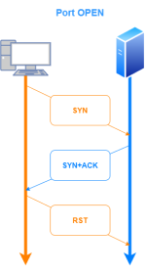

hping3
Analize response from the target
according to the response monitored with Wireshark(or similar softwares) we can determine if a port is open/closed/filtered
hping3 -p 53 -S 10.50.97.5
-S → SYN Scan



Review:
S+A → port open
R+A → port closed
no response → port filtered
Scan a group of ports
To scan a group of ports we can use the option --scan (or -8 that is the same thing).
--scan 22,53,153 → scan only the ports 22,53,153
-scan 1-1000 → range of ports (in this case from 1 to 1000)
--scan known → includes all the ports listed in /etc/services
--scan all → all is an alias for 0-65535
hping3 10.50.97.5 -S --scan known
Set Source Port
-s 53 → useful to set port 53 if we want to scan a DNS
example:
To understand if a port is open or closed we need to check the Flags of the packet in the response
S+A → port open
R+A → port closed
no response → port filtered